Ce qui se passe à MDI.
Admissions, bourses, partenariats, recherche, vie du campus : toutes les nouvelles publiées par l’école, classées par rubrique.

À la une
Les dernières nouvelles.
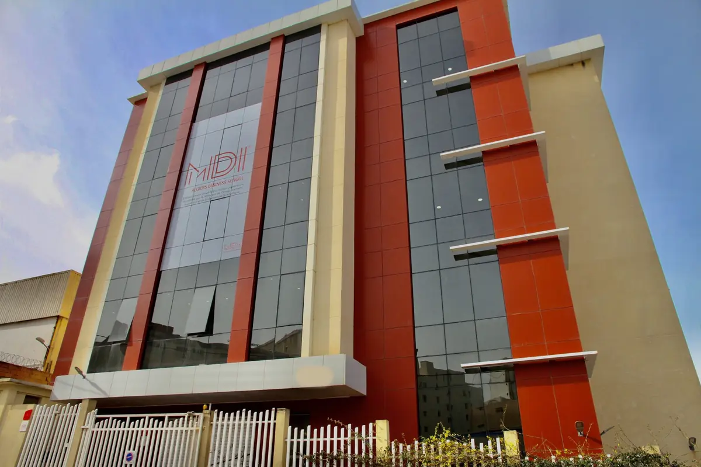
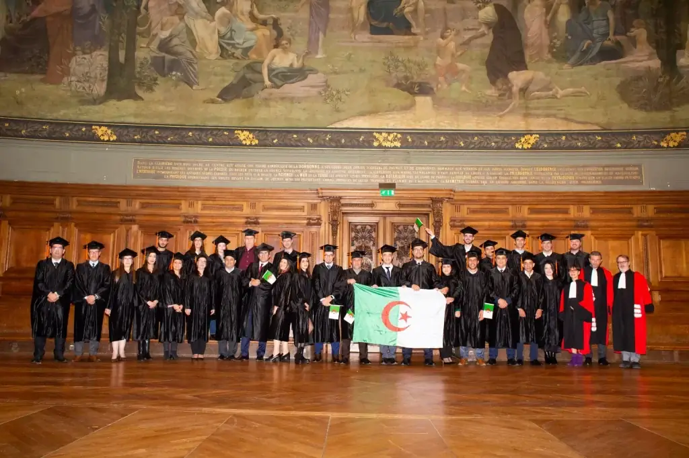

Une promotion de diplômés en toge ; le jury des bourses d’excellence Natixis en séance.
MDI réaffirme son engagement qualité et sa conformité ISO 9001:2015 pour ses 30 ans
À l’occasion de son 30e anniversaire, l’école publie sa Politique Qualité : quatre engagements de la direction et une conformité réaffirmée au référentiel ISO 9001:2015.
Toutes les actualités
Par rubrique, par mot.
33 articles publiés entre 5 février 2025 et 25 juillet 2026. Choisissez une rubrique ou cherchez un mot : un programme, un partenaire, une bourse. Chaque carte ouvre l’article complet.
33 actualités
MDI réaffirme son engagement qualité et sa conformité ISO 9001:2015 pour ses 30 ans
À l’occasion de son 30e anniversaire, l’école publie sa Politique Qualité : quatre engagements de la direction et une conformité réaffirmée au référentiel ISO 9001:2015.
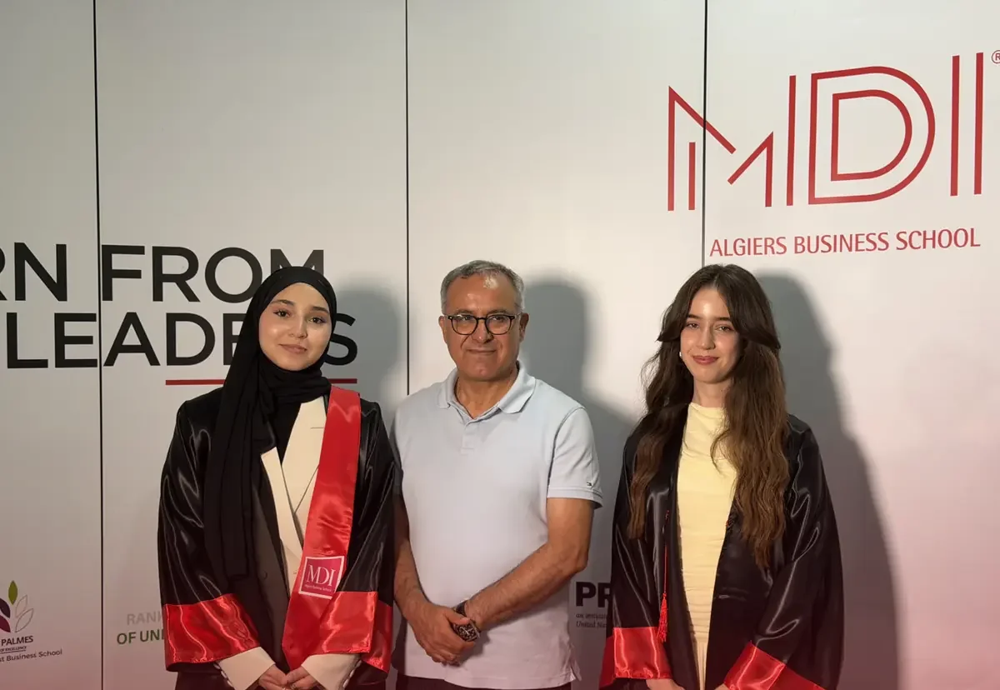
Soutenances de fin d’études 2026 : les étudiants de Master 2 à l’honneur
La promotion 2026 des Masters a présenté ses projets de fin d’études avec rigueur, professionnalisme et expertise.
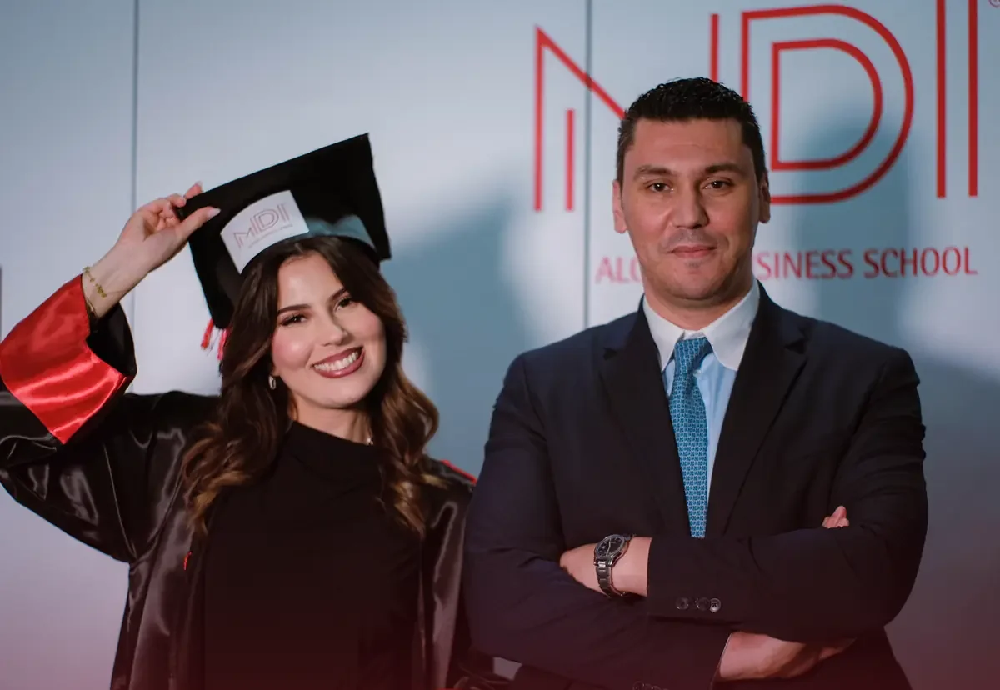
Soutenances de Licence 3 2026 : une nouvelle étape vers la réussite
Les étudiants de troisième année de Licence ont présenté leurs projets devant le jury, une étape qui valorise trois années d’apprentissage.

MDI Excellence Scholarships 2026 : investir dans les leaders de demain
Pour ses 30 ans, MDI lance un programme de bourses en trois catégories pour la rentrée de septembre 2026 : Graduates, Academic Excellence (Master) et Social Value.
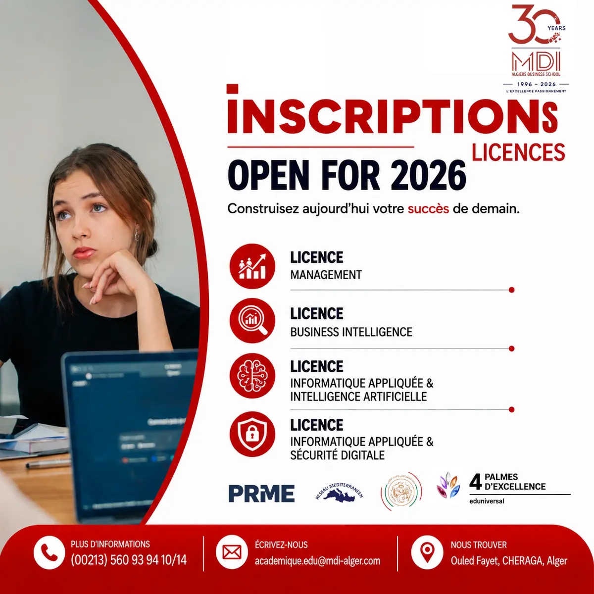
Inscriptions Licence 2026 : rejoignez MDI Algiers Business School
Les inscriptions aux quatre programmes de Licence sont ouvertes pour la rentrée universitaire 2026 : Management, Business Intelligence, Informatique & IA, Informatique & Sécurité digitale.
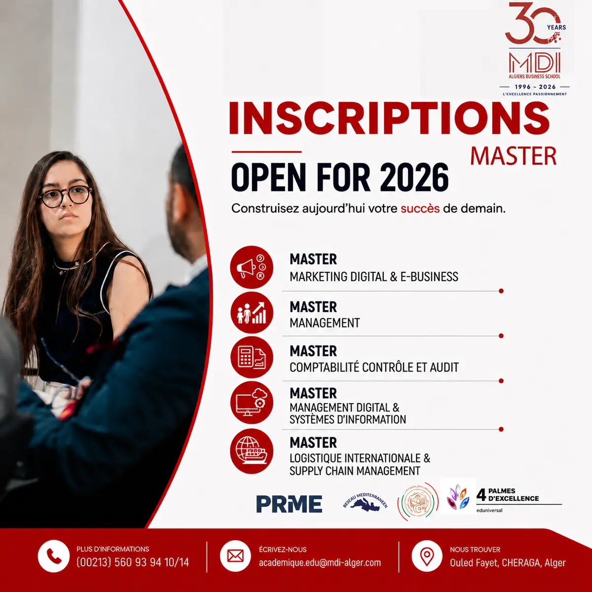
Inscriptions Master 2026 : passez à l’étape supérieure
Titulaires d’une Licence ou en dernière année d’études : les inscriptions aux cinq Masters de MDI sont ouvertes pour la rentrée 2026.
Journées d’orientation 2026 : préparez votre avenir avec MDI
Du 30 juin au 31 juillet 2026, les conseillers pédagogiques de MDI reçoivent les bacheliers sur le campus pour des entretiens d’orientation personnalisés.

Appel à communication : colloque scientifique national « Made in Algeria et industrialisation »
Le colloque scientifique national de MDI, organisé avec le LARMHO (Université de Tlemcen), se tiendra le 22 octobre 2026 au Holiday Inn Algiers – Cheraga Tower.
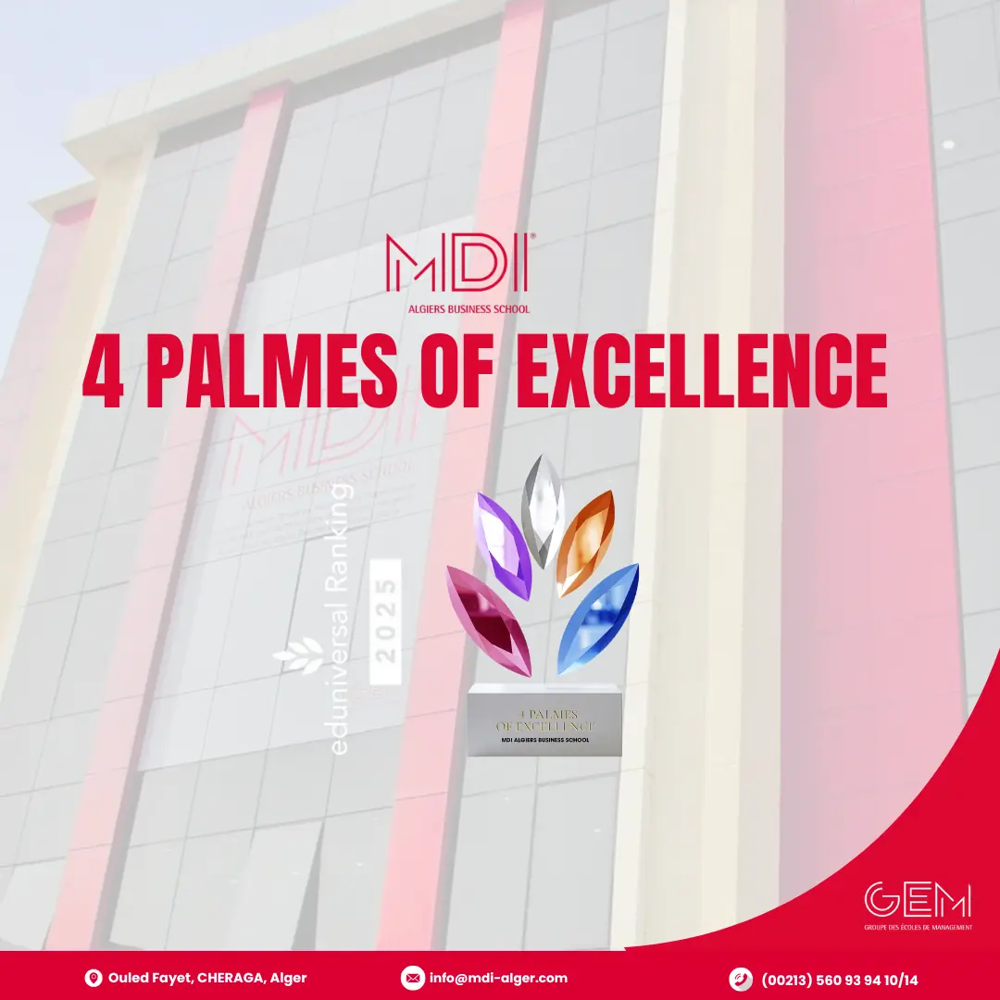
MDI obtient la 4e Palme « Top Business School » du classement Eduniversal 2025
Le classement mondial Eduniversal 2025 décerne à MDI sa 4e Palme, qui récompense la progression continue de l’école sur la scène académique internationale.

Rencontre-débat avec le Professeur Taïeb Hafsi : la pensée autonome, levier du succès des entreprises
Le 11 décembre 2025, le Professeur émérite de HEC Montréal a développé devant les participants une réflexion sur la pensée autonome comme condition du succès des entreprises et du développement des nations.
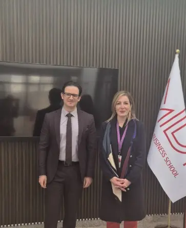
MDI et Yassir explorent de nouvelles perspectives de collaboration stratégique
Le Directeur Général de MDI a reçu la Corporate Sales Director de Yassir pour préparer un partenariat axé sur l’employabilité des étudiants et des projets communs.

Lancement du Certificat Administrateur d’Entreprises avec l’Institut Tunisien des Administrateurs
En partenariat avec l’ITA, MDI lance en janvier 2026 une formation certifiante dédiée à la gouvernance d’entreprise. Début des cours le 17 janvier 2026.
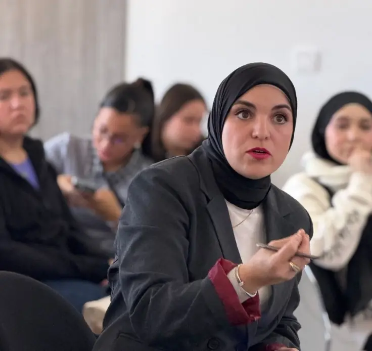
Approche pluridisciplinaire de la santé mentale et du bien-être au travail
Une journée d’études a croisé management, sociologie du travail, psychologie clinique et psychiatrie pour mieux comprendre les transformations du travail et leurs effets sur la santé mentale.
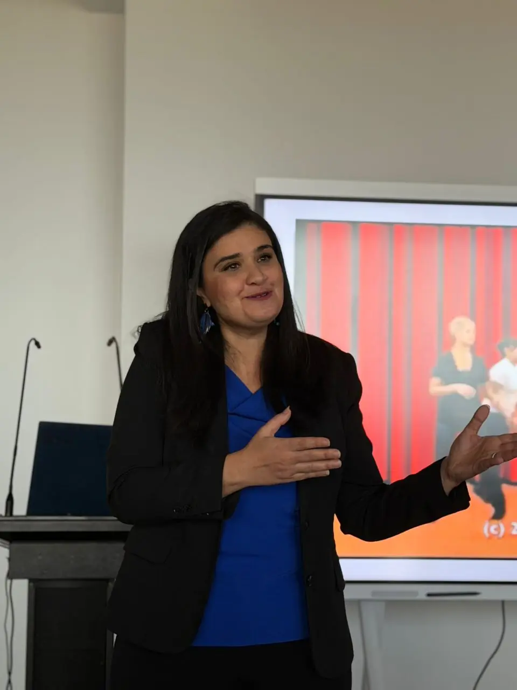
Conférence sur l’hygiène numérique et l’économie de l’attention
Protection des données, cybersécurité au quotidien et gestion des distractions numériques : une matinée pour sensibiliser étudiants, enseignants et partenaires aux impacts du digital.

MDI et Bel Algérie s’engagent dans un partenariat stratégique au service des compétences de demain
Une convention-cadre signée avec Bel Algérie prévoit stages, interventions d’experts dans les cours, recherche appliquée, formation continue et projets RSE.

Leçon inaugurale des Masters 2025 avec Abdenour Houaoui, CEO de Hamoud Boualem
Pour ouvrir l’année des Masters, le CEO de Hamoud Boualem a livré aux étudiants sa vision du rôle du manager et du leader dans un monde en mutation.

Semaine d’intégration 2025 : trois ateliers pour accueillir les nouveaux étudiants de Licence
Emploitic, i-Yusr, U.Builders et une coach en neurosciences appliquées ont animé les ateliers de la semaine d’intégration des premières années, du 30 septembre au 2 octobre 2025.
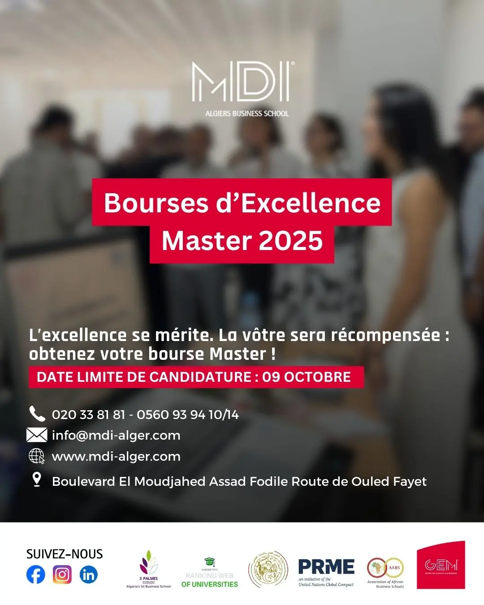
Bourses pour les études de Master : candidatures jusqu’au 9 octobre 2025
Bourses partielles ou totales pour les candidats méritants aux programmes de Master, sur critères de résultats académiques, de motivation et de projet professionnel.

Accord-cadre entre AYRADE et MDI Executive pour accompagner la transformation numérique
L’acteur du numérique AYRADE et MDI Executive Education s’associent pour concevoir des programmes de formation adaptés aux enjeux de la digitalisation des entreprises algériennes.

Concours d’admission 2025 : retour sur les deux sessions Licence et Master
Épreuves écrites puis entretien de motivation : les concours d’admission 2025 se sont tenus les 6 et 7 septembre, puis les 13 et 14 septembre pour la seconde session.
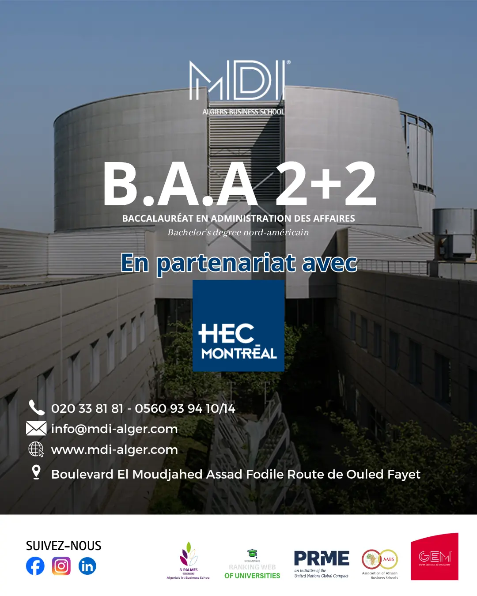
De MDI à HEC Montréal : le B.A.A. 2+2 et le D.E.S.S., deux parcours vers une carrière internationale
Deux années à MDI puis deux années à HEC Montréal pour le Baccalauréat en administration des affaires ; une année à MDI puis une année à Montréal pour le D.E.S.S. en administration des affaires.
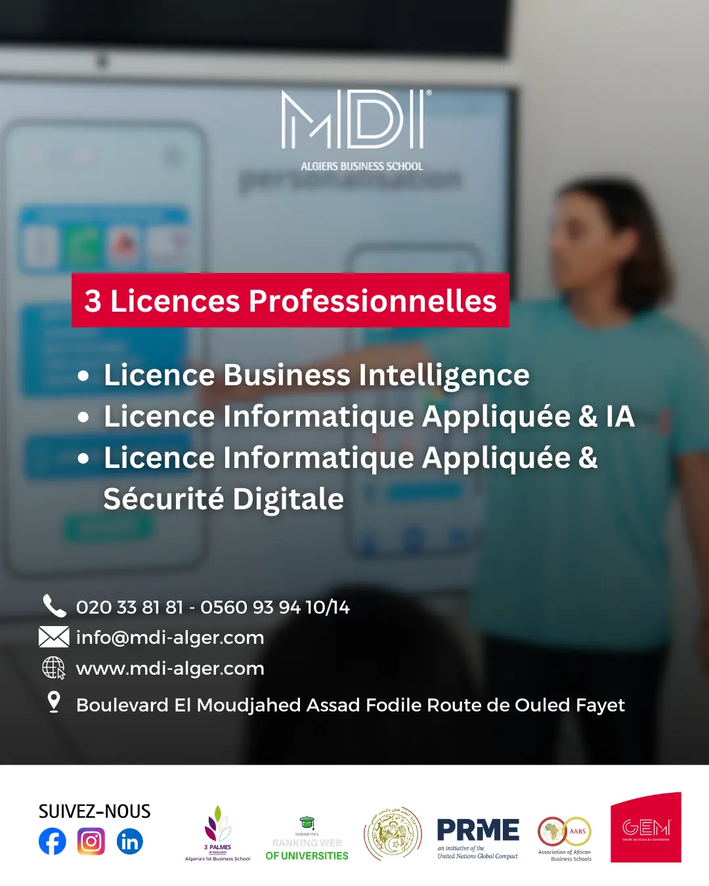
MDI lance trois licences en informatique dès la rentrée universitaire 2025
Business Intelligence, Informatique Appliquée & IA, Informatique Appliquée & Sécurité Digitale : trois licences professionnelles portées par le nouveau département informatique, stage en entreprise inclus.
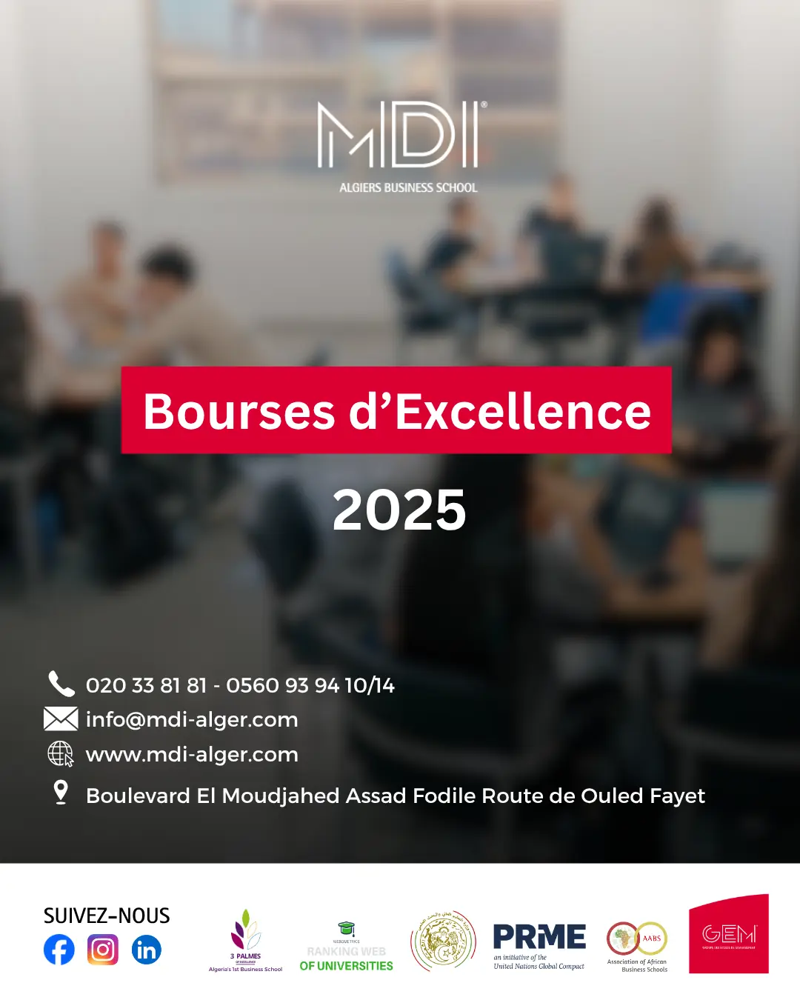
Bourses d’Excellence 2025 pour les bacheliers
Jusqu’à 100 % des frais de scolarité pris en charge pour les bacheliers 2025 ayant obtenu une moyenne d’au moins 14/20 et réussi les épreuves de sélection.
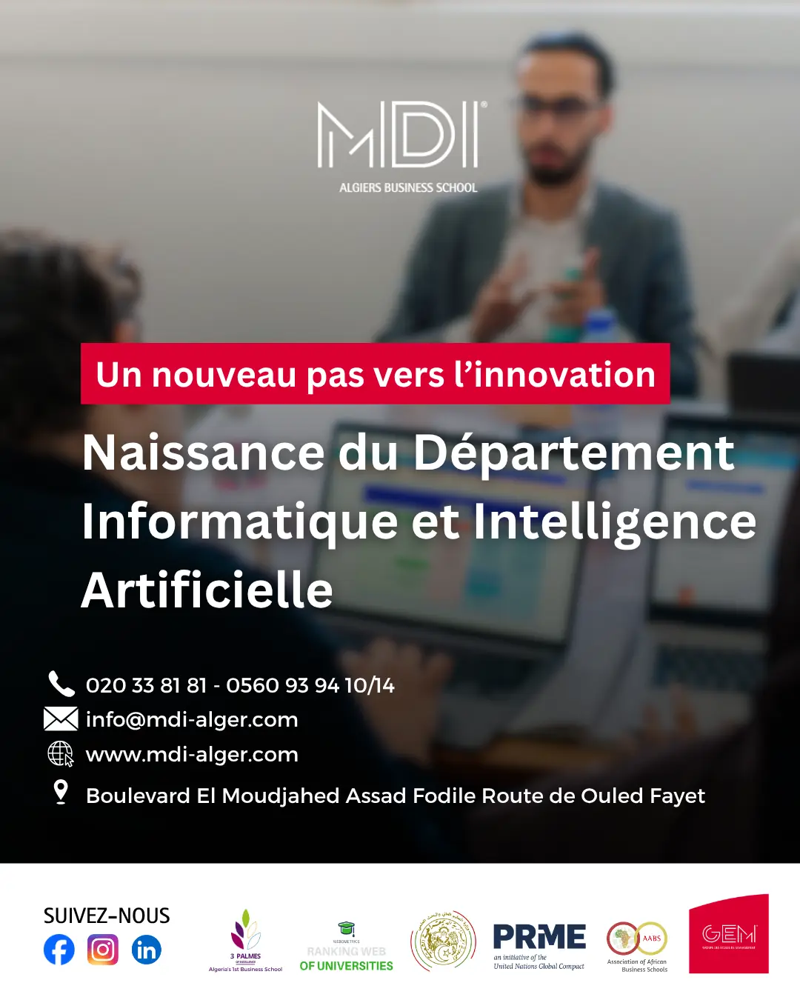
Création du département Informatique & Intelligence Artificielle
Un nouveau pôle à l’intersection de l’informatique appliquée, de l’analyse de données et de l’IA, qui porte dès septembre 2025 un Master et trois Licences.
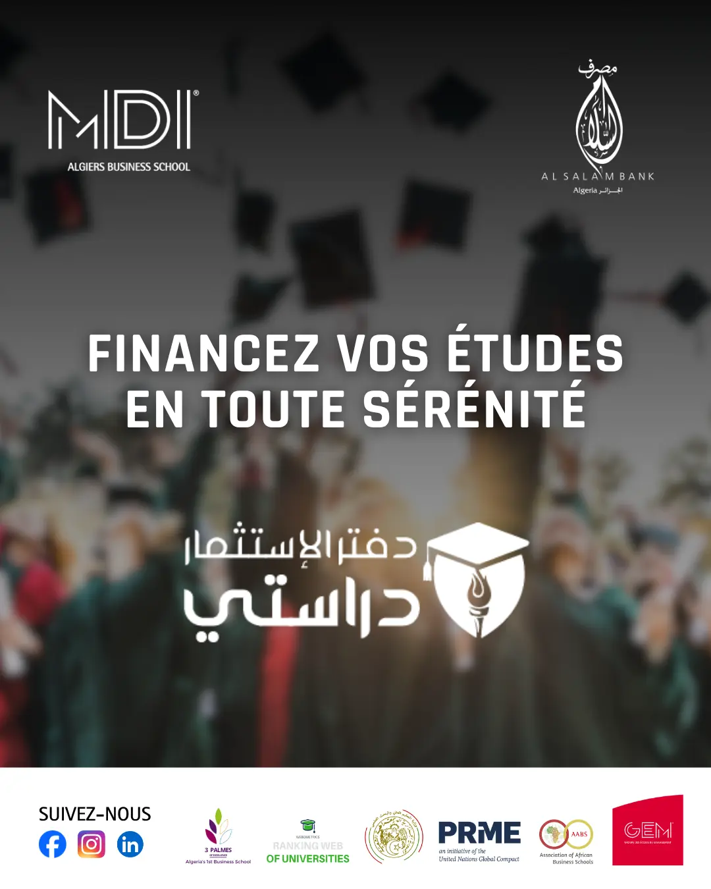
MDI et Al Salam Bank poursuivent leur partenariat pour le financement des études
Prêts étudiants à taux préférentiels, remboursement flexible et accompagnement personnalisé : la banque reconduit son dispositif pour les étudiants de MDI.

Retour sur le Hackathon 2025, premier hackathon de MDI
Du 22 au 24 juin 2025, co-organisé avec i-Yusr et Al Salam Bank, le premier hackathon de l’école a réuni les étudiants autour de défis concrets, de workshops et de pitchs devant un jury.
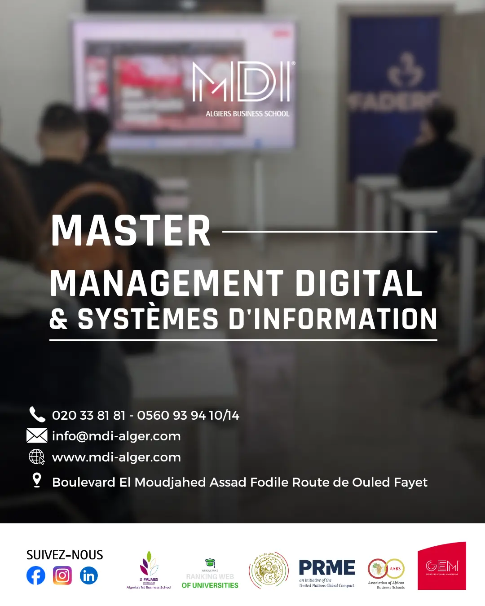
Nouveau Master : Management Digital & Systèmes d’Information
Ouvert pour l’année universitaire 2025-2026, ce master forme des managers hybrides capables de piloter la transformation digitale, avec certains cours en anglais.

Le DBA en action : une journée d’échanges et de réflexion avec le Pr Pierre Louart
Le 19 avril 2025, les participants du Doctorate of Business Administration ont présenté l’avancement de leurs recherches lors d’un atelier animé par le Pr Pierre Louart.
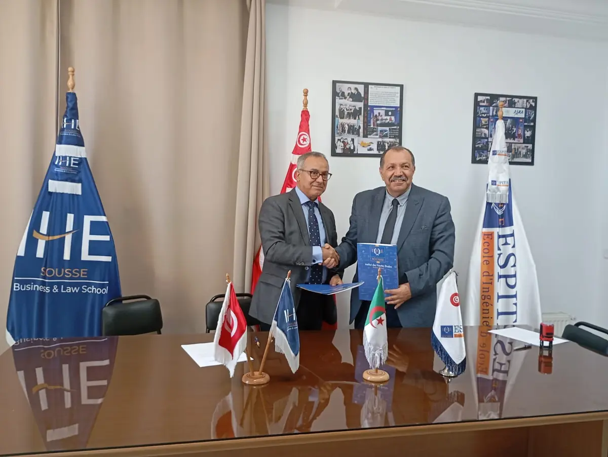
Partenariat stratégique entre MDI et l’IHET Tunisie
Programmes conjoints en digital business, data science, IA et cybersécurité, doubles diplômes, mobilité étudiante et incubateur maghrébin : les axes de l’accord signé avec l’IHET.
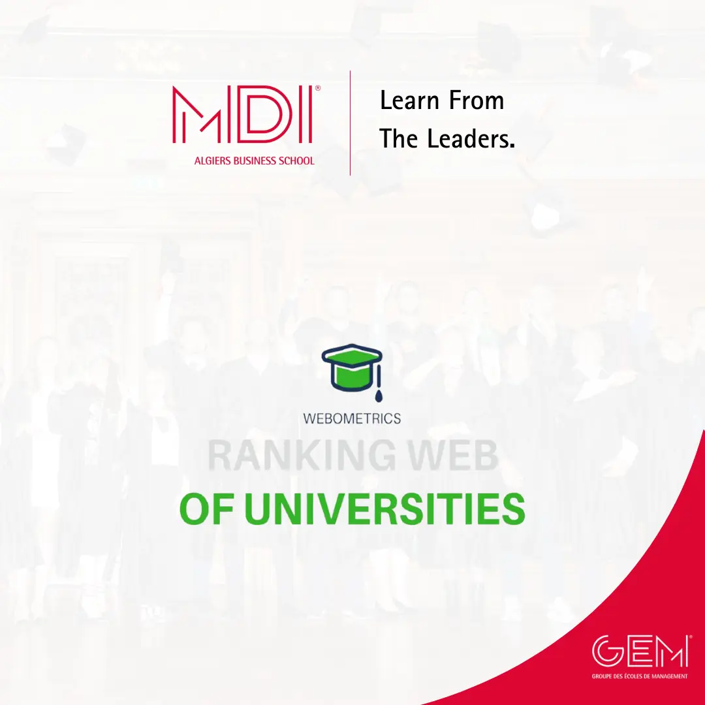
MDI figure dans le classement Webometrics 2025
L’école confirme sa présence dans le Ranking Web of Universities, qui évalue plus de 31 000 établissements d’enseignement supérieur sur leur visibilité et leur production scientifique.

Partenariat MDI – TBS Education : poursuivre ses études de spécialisation à Barcelone
Le directeur du campus de Barcelone de TBS Education a présenté aux étudiants de MDI les cursus et les possibilités de rejoindre l’école dans le cadre de la convention de partenariat.
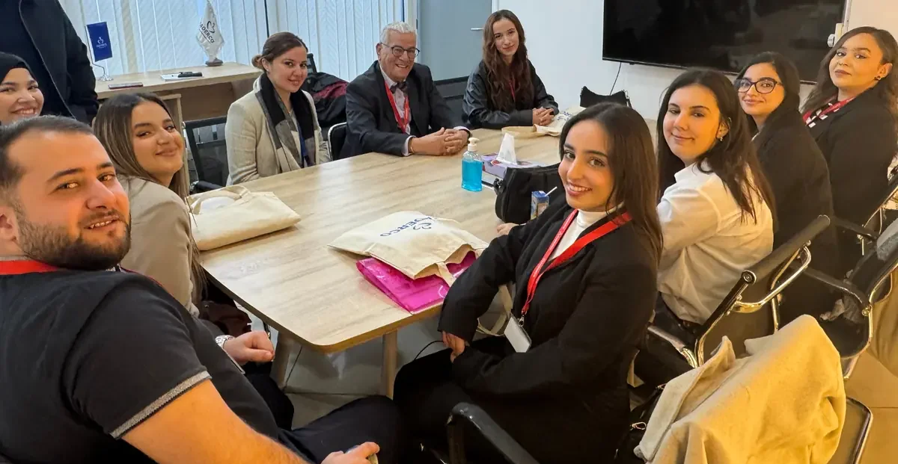
Lancement du stage en entreprise des étudiants de Master 2 boursiers de Faderco
Les étudiants de Master 2 Marketing Digital et Audit-Comptabilité-Contrôle bénéficiaires d’une bourse Faderco ont débuté leur stage en entreprise.
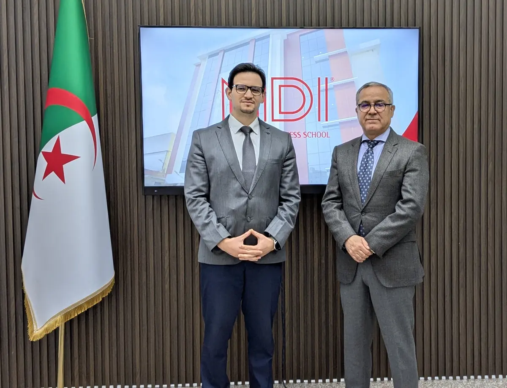
Nouvelle direction à MDI Algiers Business School
Après plus de trente ans d’engagement, Dr Brahim Benabdeslem quitte la direction de l’école et préside son comité de direction ; Dr Amine Oussedik lui succède.

Aucune actualité ne correspond à cette recherche. Essayez un autre mot ou une autre rubrique, ou écrivez-nous : info@mdi-alger.com (nouvel onglet)
Agenda
Prochains rendez-vous.
Les journées d’orientation (juin – juillet), les concours d’admission (septembre), la leçon inaugurale (début octobre) et le Job Day (décembre) reviennent en principe chaque année : le calendrier récurrent est détaillé dans l’agenda.
Suivre MDI
Au jour le jour, sur les réseaux.
Les annonces d’inscriptions, les affiches des bourses et les photos des événements sont publiées d’abord sur les réseaux sociaux de l’école, puis reprises ici.
Presse et demandes d’information : info@mdi-alger.com (nouvel onglet) · 0560 93 94 10
Admissions
Préparez votre rentrée 2027.
Inscriptions en Licence et en Master, bourses MDI Excellence Scholarships, journées d’orientation : les actualités annoncent les dates, un conseiller vous reçoit sur rendez-vous au campus de Chéraga.